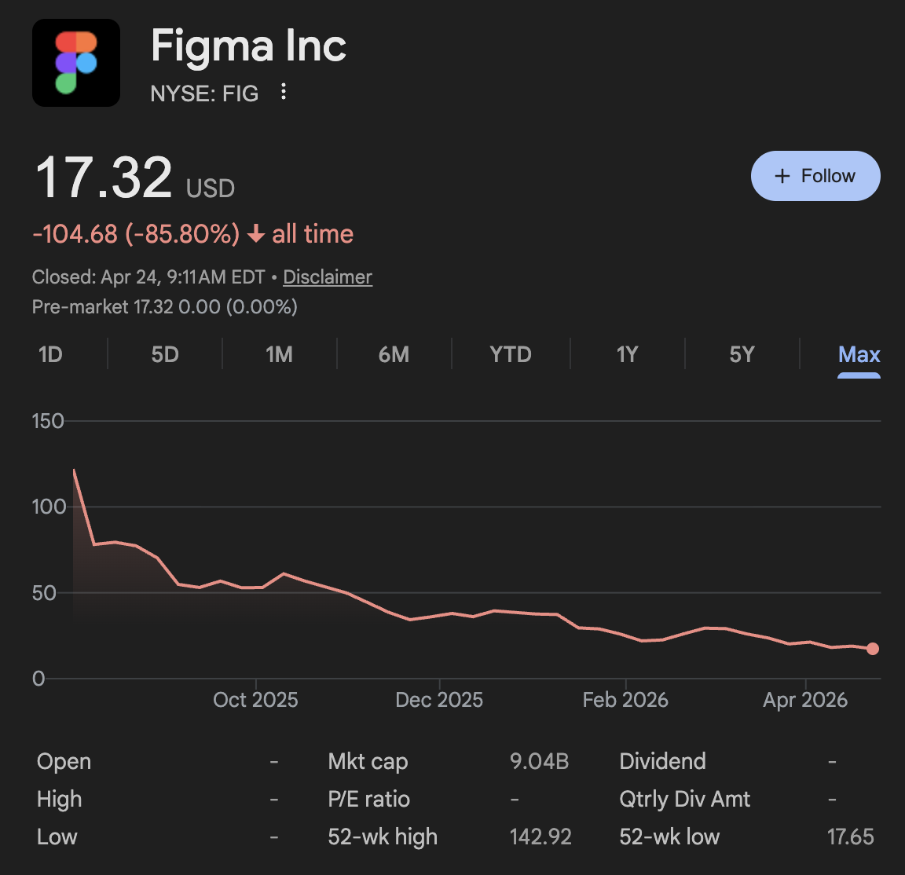
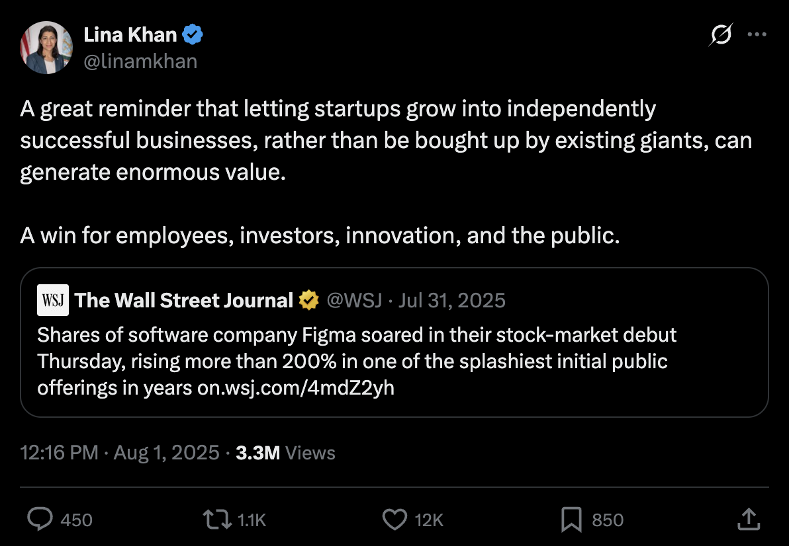
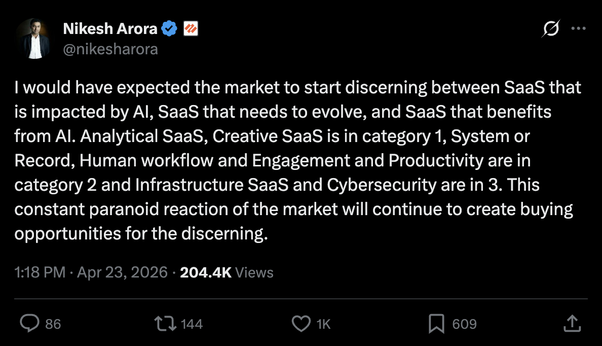
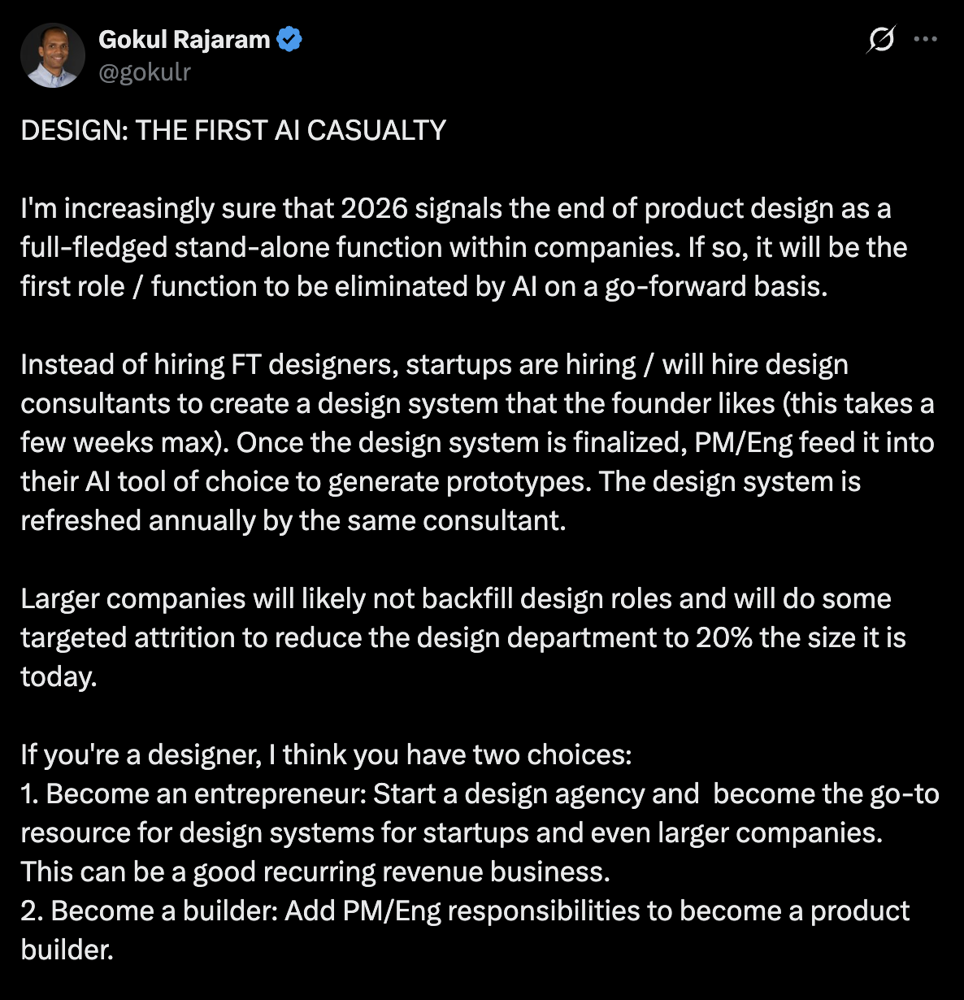

On Figma
Much ink has been spilt on the death of SaaS at the hands of AI. No better illustration of the point than the Figma stock price:

It is (was?) the poster boy. I cannot overstate how hard it is to get the persnickety designers of Silicon Valley to like any software tool, and they all love Figma. It might also be the first design tool where a majority of the users are non-designers. It is not easy to build a tool so universally loved, not to mention so essential to the creation of other products. The valuation story also reads like fiction: a $20B acquisition from Adobe blocked by the UK, EU and the DOJ, an IPO so successful that even Lina Khan claimed credit: listed at $33, popped to $143 the first day (an implied ~$70B valuation).

I won’t belabor the point, you get it.
Wall St has turned bearish on SaaS. Every time Anthropic releases a new product, SaaS prices tumble a bit more. But smart money knows that not all SaaS is created equal.
Nikesh Arora (CEO of Palo Alto Networks, once the next-CEO of Softbank):
I would have expected the market to start discerning between SaaS that is impacted by AI, SaaS that needs to evolve, and SaaS that benefits from AI. Analytical SaaS, Creative SaaS is in category 1, System or Record, Human workflow and Engagement and Productivity are in category 2 and Infrastructure SaaS and Cybersecurity are in 3. This constant paranoid reaction of the market will continue to create buying opportunities for the discerning.

Where does Figma fit in this? I’m optimistic, and here’s why:
First, let’s get the obvious ones out of the way:
- Dylan is a generational founder, and
- Figma has a massive distribution advantage
You don’t get to become a top SaaS product without these.
Figma is straddling category 1 and category 2 in Nikesh’s framework above: Creative SaaS that will be hurt by AI, and Productivity SaaS that needs to adapt to AI. If you take an AI-centric lens to the product, that tracks.
But it’s not clear that the AI-centric lens is the right one, that model capability is all that matters here. Currently Claude Code or Claude Design do not have the right affordances to be the primary design tools of a team building software. If you’re ‘vibe-designing’, they get the job done, but that’s far from being enough.
Figma has some inherent advantages that puts it farther ahead than investors give it credit for:
-
**Figma has solved multi-player
**This is capital-H hard. Neither Claude nor ChatGPT/Codex are anywhere close, though ChatGPT has experimented with group chats. You cannot have productivity tools without users collaborating. Coding tools are able to side-step the problem by pushing it into Github. My bet is it’s easier for a collaboration product to become AI native than for an AI product to become collaboration-native. -
Figma can fight slop
I don’t mean humans have better taste than AI and can hand-craft better designs. The anti-dote to slop is better prompting — nudging the LLM away from the sloppy average (the median, actually). Visual specification is a better prompting language than text for design. Figma can let you provide guidance to an LLM: go in and tweak the accents, round corners, adjust whitespace. It’s easier to show than to tell. LLMs do really well when they have the right examples. Designing in tailwind and html by throwing words at a coding agent gets very limiting very fast. This tweet echoes the sentiment. -
Figma is upstream of code
There’s a reason Cloudflare and Squarespace want to sell domains. Or why Google was selling domains. You think of a new website, a new company, the first thing you do is buy the domain. The rest of the infrastructure (or email, calendar, etc.) comes after. They want to get the customer even before she is thinking about a website or email. Similarly, if you want to build an app, the first thing you do is sketch it out. Yes, Claude Code, v0, Lovable are all trying to be the place to start, but it’s not natural — you start worrying about lower level details instead and mixing it all up. These AI tools all want to be where Figma is. -
Figma is organizational infrastructure
Like Notion or Slack. It’s not just for designers, the EPD org is already on it, much of marketing is. 80% of their users use FigJam or Figma Slides (from Q2 ‘25 earnings). Figma is where certain kinds of concepts get seeded, ideas get bandied, work gets formulated. Collaboratively. This is sticky. -
Dylan is a generational founder
Yep, #1 is more important than ever. The advantages above aren’t a moat, and worth squat if Figma doesn’t adapt. It needs a CEO who can figure how to navigate this new world. Silicon Valley loves saying how taste is the only thing that matters now, and Dylan has taste. Taste comes down to foreseeing technology trends, and foreseeing cultural trends. Dylan showed taste betting on realtime collaboration and WebGL in the browser. He was buying CryptoPunks before NFTs were a thing, and early to recognize the promise of crypto — arguably the story is still playing out, but is an undeniable growing technological trend. No one gets lucky twice.
Anthropic (or any lab) doesn’t have all the pieces either, and while they have the best model and the best coding agent and pose a credible threat, Figma has a real hand to play.
Which takes me back to Nikesh’s tweet. Saying all SaaS is doomed by AI is obviously not right. But saying some categories of SaaS are doomed and others aren’t is also too broad a brush stroke.
So what am I worried about?
Execution risk, obviously, but it is to some extent alleviated by #1.
Most concerning is Dylan not catching on to Anthropic building a competitor while their CPO was on his board. Was he simply not paranoid enough? Surely Claude building a direct competitor was just a matter of time?
Founder-CEOs are inevitably wartime CEOs, but the war has changed — foggier, with higher stakes.
Update: Hours after publishing this article, Gokul Rajaram posted this provocative take:

It was controversial, and elicited some strong responses. When something is this controversial, you know it hits a nerve:
Lenny Ratchitsky (of Lenny’s Newsletter): I rarely disagree with you, but I do on this. I expect design to become a differentiator as the quantity of software increases. And anyone that’s worked with a design system has seen how much you still need to “design” the product and experience. Great design is hard.
Karri Saarinen (Founder/CEO of Linear): I see many other roles die before design does. Anyone who makes anything meaningful should never outsource design unless it’s very ephemeral, standalone (brand visual, campaign websites) or contained. There is even a path where there is just design and software architects (feel and function), and all the other roles disappear.
Ben Blumenrose (Founder of The Design Fund, early Facebook): This definition of product design is so sadly thin. Product designers do help with UI design systems but that’s a fraction of what they do which also includes what product to build, how it should work, how to ensure people understand how to use it, how to create a brand people love and rally around, how the system should work together, etc etc etc but yes they’ll need to do visual design of UI design systems less so I’ll concede on that.
Regardless of how the discipline changes, it will change. And it will need new tools. Figma is in a great position to lead in this shift.
Disclaimer: This is not investment advice. I do not own $FIG directly, but might buy some soon. Do your own research.